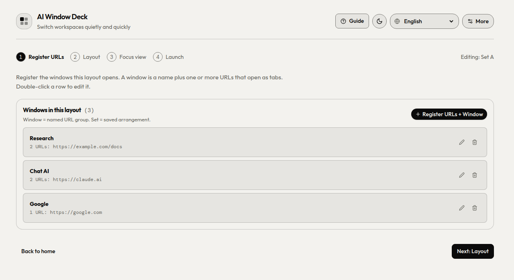
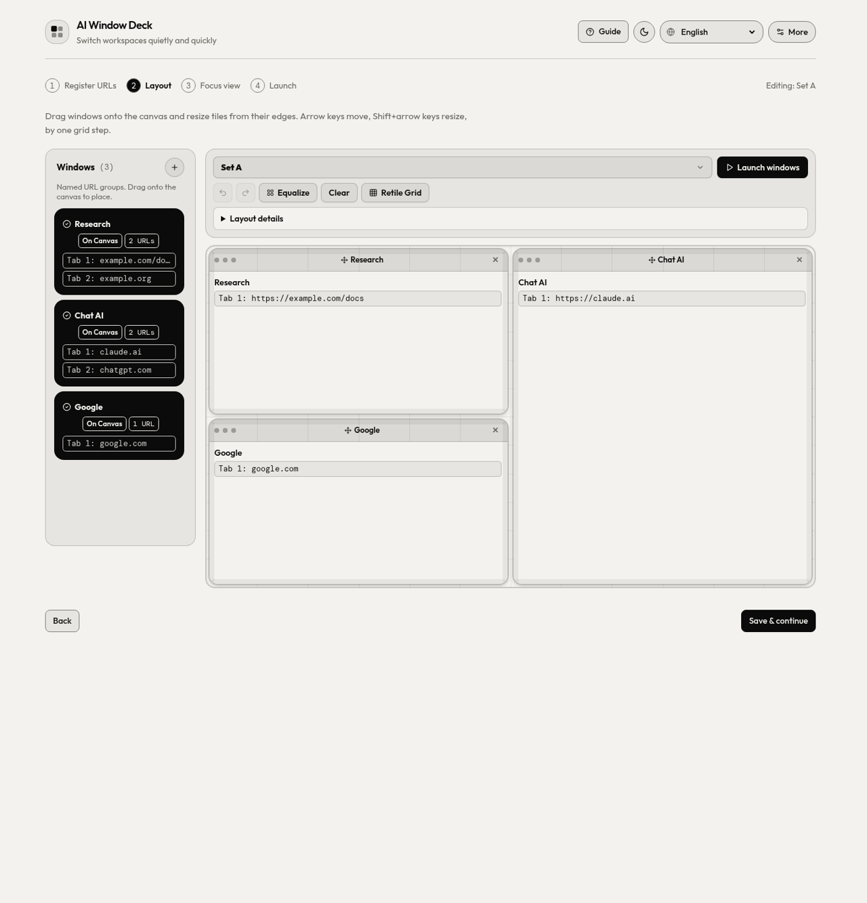
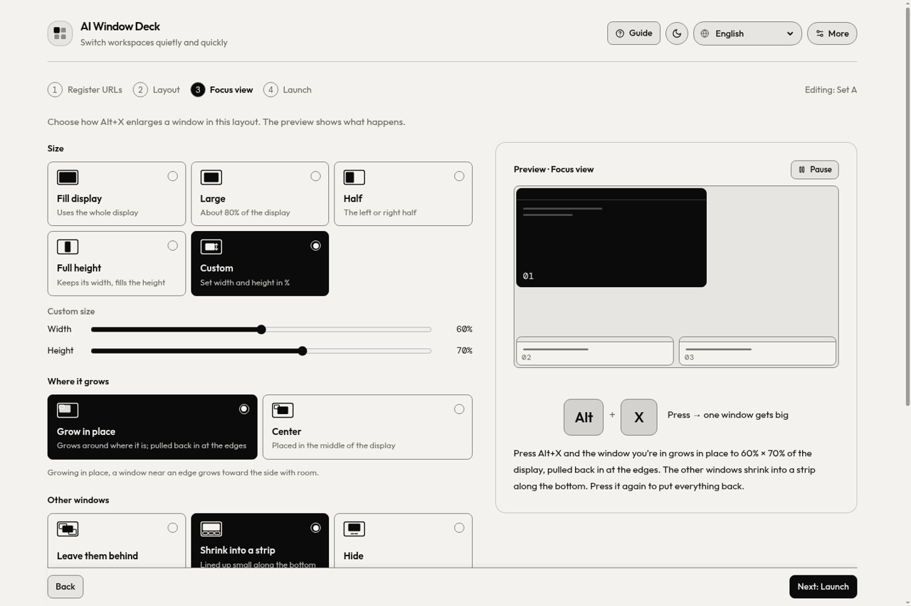
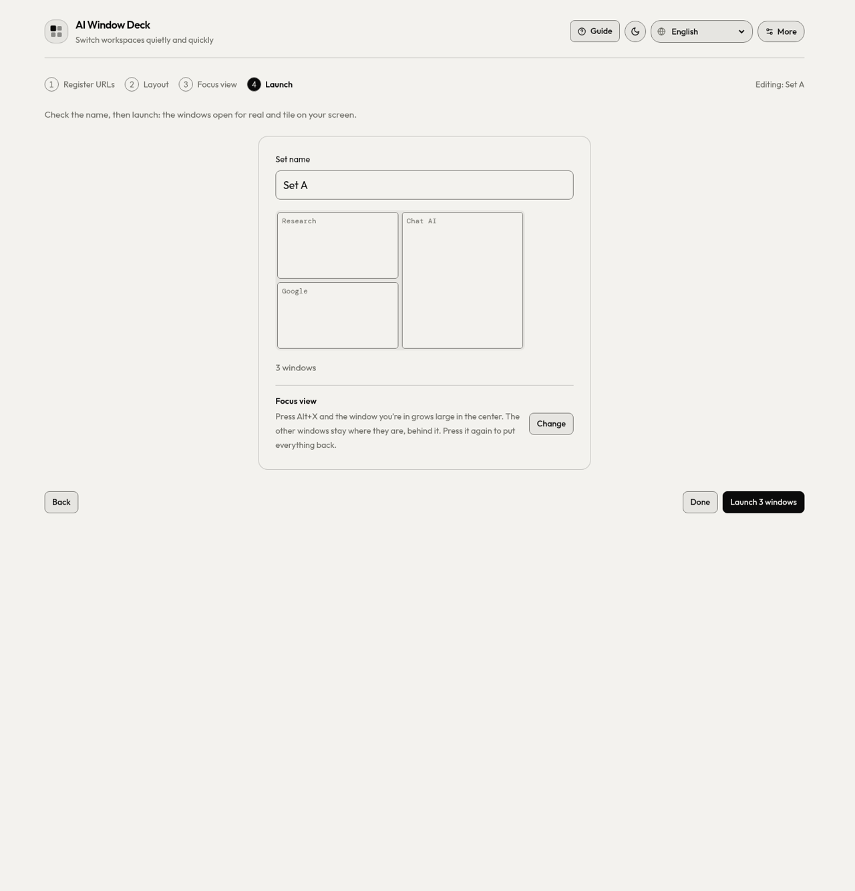
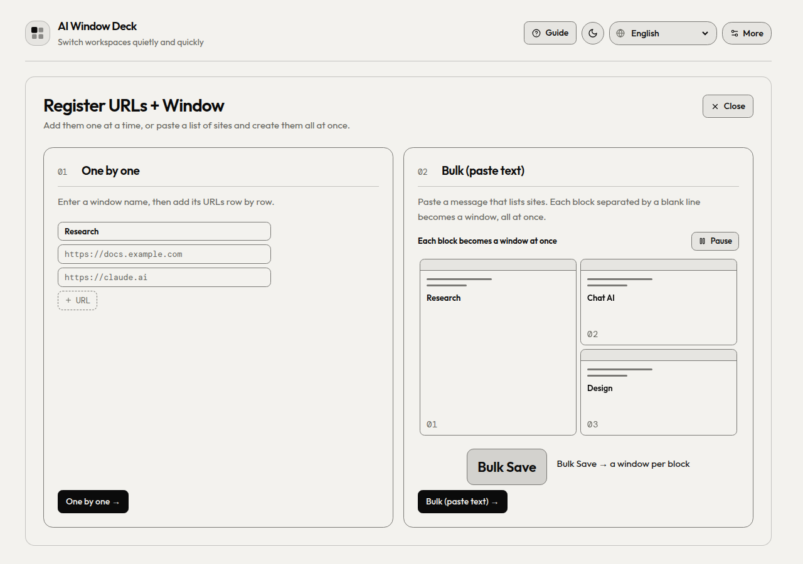
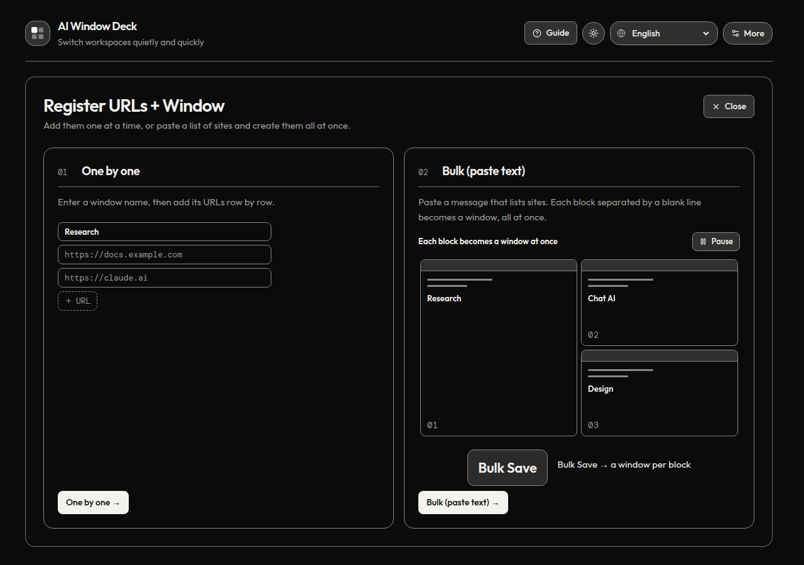
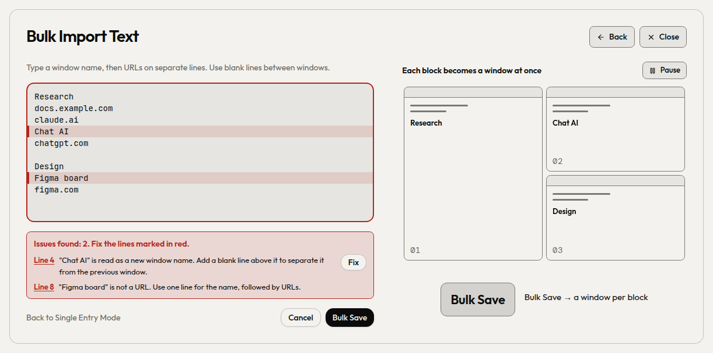
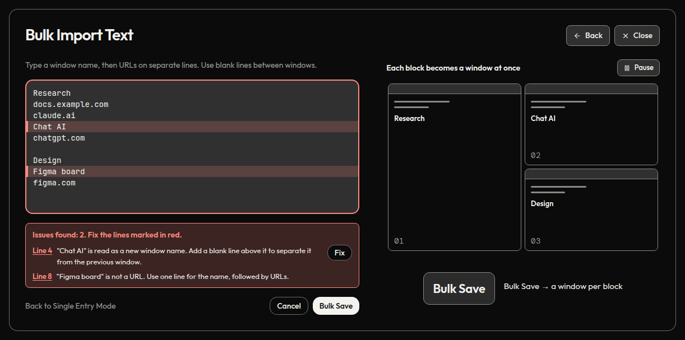
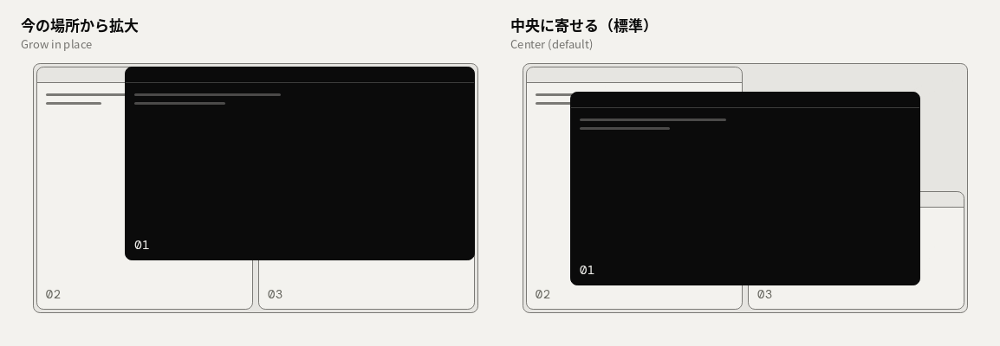

① Register URLs
Save a name and URLs for each window, or paste a list of sites to create several at once. Each URL opens as a tab.

Preview · Tiled as usual
More cloud sessions. Room to think.
Run Claude Code in the cloud and Codex sessions side by side. Keep the compute in the cloud instead of loading your machine with local workers. Register URLs, arrange your windows, choose a Focus view, and launch. Your Chrome profile and sign-ins stay with you.
Overview
Ordinary Chrome windows for your cloud work. Keep sessions visible across projects and displays, then give the active window more room when you need it.
How it works
Follow the ①–④ stepper once. Return to any step when your projects change.
Save a name and URLs for each window, or paste a list of sites to create several at once. Each URL opens as a tab.

Place windows on the canvas and resize their grid slots.

Choose an enlargement size and origin: grow in place or center.

Choose your displays and open the saved layout as Chrome windows.

New in 1.11.2
Register URLs + Window opens right in the page. Add windows one by one, or paste a message that lists your sites: each block separated by a blank line becomes a window.
Choose how to register. The bulk card shows a list being copied from a chat and pasted in.


Lines that need attention turn red. Each issue links to its line, and Fix adds the missing blank line for you.


Type github.com and it is saved as https://github.com. localhost and local addresses get http://.
Paths such as /Users/me/My Site/index.html or C:\docs\notes.html open as file:// tabs, spaces included. Chrome opens them once Allow access to file URLs is on for the extension.
URLs separated by spaces on one line each become a tab. Lines starting with a label like Memo: stay window names.
Focus view
⌥X / Alt+X enlarges the active window. Grow in place to keep its position, or center it on the display. After a manual resize, ⌥Z / Alt+Z restores the window to its registered grid slot.

Choose one or more displays for your workspace.
Save windows, layouts and settings as JSON to take them to another machine.
English, 日本語, Deutsch, Español, Français, 한국어, Português (Brasil) and 简体中文.
04Install
Install from the Chrome Web Store in one click, or load a release ZIP. Both take about a minute.
Live on the Chrome Web Store. One-click install, automatic updates.
Add to Chrome ↗AI-Window-Deck-vX.Y.Z.zip from Releases and unzip it.chrome://extensions and turn on Developer mode.git clone https://github.com/takaoumehara/ai-window-deck.gitThe repository root is the extension package. Select the cloned folder with Load unpacked; there is nothing to install or build.
05Shortcuts
Chrome lets an extension suggest four default shortcuts. Assign or change any of them at chrome://extensions/shortcuts. The panel's Change shortcuts link opens that page.
| Command | Default |
|---|---|
| Focus: enlarge the active window | ⌥X / Alt+X |
| Restore to the registered grid slot, including after a manual resize | ⌥Z / Alt+Z |
| Full screen / back | AltQ |
| Undo the last arrangement | not set |
| Next window / previous window | not set |
| Focus window 1–8 | not set |
On macOS, Chrome shows Alt as ⌥.
06Privacy
No server, no account, no analytics. Your windows and layouts stay in your Chrome profile.
chrome.storage.sync, so Chrome can sync them between your own devices if Chrome Sync is on.chrome.storage.session and cleared when the browser session ends.| Permission | Why it is needed |
|---|---|
tabs | Open saved URLs as tabs, and read the titles and URLs of open windows to list and arrange them. |
tabGroups | Name and colour the tab group of each window the deck opens. |
storage | Save your windows, layouts and preferences. |
system.display | Read display sizes and positions, so windows are tiled on the right monitor. |
The full policy is in PRIVACY.md.
07FAQ
chrome://extensions/shortcuts.If AI Window Deck helps your day, you can support its development on Ko-fi.